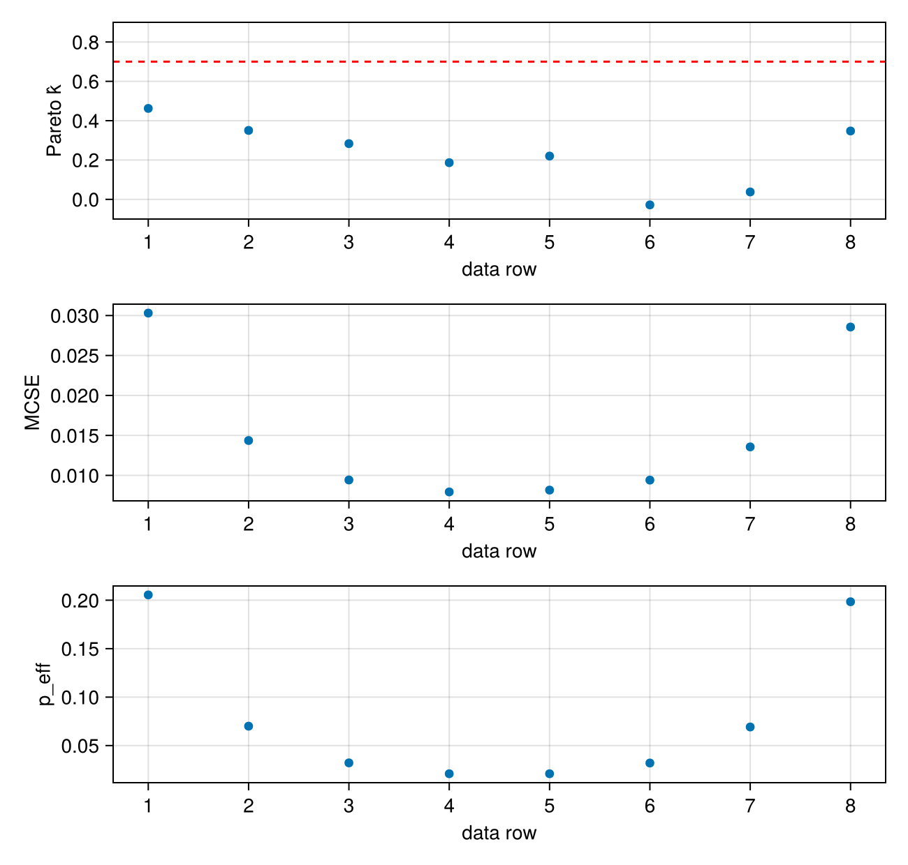
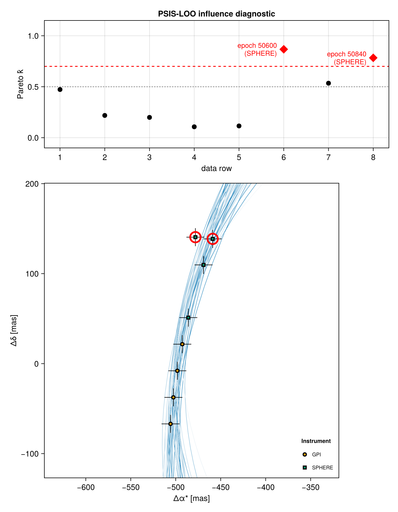

Cross-Validation
Cross-validation asks how well a fitted model predicts data it has not seen. In Octofitter that question is answered by subsetting observations: every observation type that carries a data table knows how to produce a copy of itself restricted to a chosen set of rows, and the machinery below builds derived models out of those copies.
There are two granularities:
- Pointwise — one held-out data row at a time. This is what leave-one-out cross-validation and PSIS-LOO need, and
Octofitter.pointwise_likecomputes it from a single chain with no refitting. - Whole likelihoods, or groups of epochs — drop an entire instrument, keep only one, or feed the data in cumulatively. These produce new
Systems that you refit.
We will use a model with two relative-astrometry instruments so that both granularities have something to say:
using Octofitter
using Distributions
using CairoMakie
using Random
astrom_dat_gpi = Table(;
epoch = [50000., 50120, 50240, 50360],
ra = [-505.764, -502.57, -498.209, -492.678],
dec = [-66.9298, -37.4722, -7.92755, 21.6356],
σ_ra = fill(10.0, 4),
σ_dec = fill(10.0, 4),
cor = fill(0.0, 4),
)
astrom_dat_sphere = Table(;
epoch = [50480., 50600, 50720, 50840],
ra = [-485.977, -478.11, -469.08, -458.896],
dec = [51.1472, 80.5359, 109.729, 138.651],
σ_ra = fill(10.0, 4),
σ_dec = fill(10.0, 4),
cor = fill(0.0, 4),
)
A = Body(
name="A",
variables=@variables begin
mass ~ truncated(Normal(1.2, 0.1), lower=0.1) # M⊙
end
)
b = Body(
name="b",
about=A,
variables=@variables begin
a ~ truncated(Normal(10, 4), lower=0.1, upper=100)
e ~ Uniform(0.0, 0.5)
i ~ Sine()
ω ~ UniformCircular()
Ω ~ UniformCircular()
θ ~ UniformCircular()
epoch = 50420.0
end
)
gpi = RelAstromObs(astrom_dat_gpi; target=b, ref=A, name="GPI")
sphere = RelAstromObs(astrom_dat_sphere; target=b, ref=A, name="SPHERE")
sys = System(
name="Tutoria",
bodies=[A, b],
observations=[gpi, sphere],
variables=@variables begin
plx ~ truncated(Normal(50.0, 0.02), lower=0.1)
end
)
model = Octofitter.LogDensityModel(sys)
Random.seed!(0)
chain = octofit(model)
display(chain)[ Info: [Tutoria] observing_geometry = false (auto): worst accumulated bias 0.00535σ, 18.7× inside the 0.1σ limit — over 300 prior draws (seed 0xc70f177e5000001)
[ Info: [Tutoria] barycentric_lighttime = false (auto): changes no prediction at all — over 300 prior draws (seed 0xc70f177e5000001)
[ Info: Preparing model
┌ Info: Determined number of free variables
└ D = 11
┌ Info: Determined number type
└ T = Float64
ℓπcallback(θ): 0.000013 seconds
∇ℓπcallback(θ): 0.000034 seconds (1 allocation: 32 bytes)
┌ Info: Starting values not provided for all parameters! Guessing starting point using global optimization:
│ num_params = 11
└ num_fixed = 0
┌ Warning: Verbosity toggle: unrecognized_stop_reason
│ Unrecognized stop reason: Too many steps (101) without any function evaluations (probably search has converged). Defaulting to ReturnCode.Default.
└ @ OptimizationBase ~/.julia/packages/OptimizationBase/Jfw5O/src/utils.jl:170
┌ Info: Found sample of initial positions
│ logpost_range = (-58.67906911190986, -49.421754602529056)
└ mean_logpost = -52.54181566495545
[ Info: Sampling, beginning with adaptation phase...
Sampling 4%|█▎ | ETA: 0:00:02
iterations: 82
ratio_divergent_transitions: 0.0
ratio_divergent_transitions_during_adaption: 0.11
n_steps: 255
is_accept: true
acceptance_rate: 0.9722414645679939
log_density: -56.86504821228286
hamiltonian_energy: 60.40779859812069
hamiltonian_energy_error: -0.11745809149708464
max_hamiltonian_energy_error: -0.5182060648505882
tree_depth: 7
numerical_error: false
step_size: 0.2753142224623902
nom_step_size: 0.2753142224623902
is_adapt: true
mass_matrix: DenseEuclideanMetric([5.1439e-8, 0.00168849, 0.0 ...])
Sampling 54%|████████████████▊ | ETA: 0:00:02
iterations: 1082
ratio_divergent_transitions: 0.0
ratio_divergent_transitions_during_adaption: 0.06
n_steps: 127
is_accept: true
acceptance_rate: 0.97339065758132
log_density: -56.11748809874435
hamiltonian_energy: 61.258690582349274
hamiltonian_energy_error: 0.002289496520837986
max_hamiltonian_energy_error: -0.13864447303181038
tree_depth: 7
numerical_error: false
step_size: 0.0232698008995888
nom_step_size: 0.0232698008995888
is_adapt: false
mass_matrix: DenseEuclideanMetric([1.00673e-5, 0.00851224, 0. ...])
Sampling 59%|██████████████████▎ | ETA: 0:00:02
iterations: 1175
ratio_divergent_transitions: 0.0
ratio_divergent_transitions_during_adaption: 0.06
n_steps: 127
is_accept: true
acceptance_rate: 0.9999692268834671
log_density: -51.19032158654224
hamiltonian_energy: 54.70710425562799
hamiltonian_energy_error: -0.07336523323825617
max_hamiltonian_energy_error: -0.10645843626116402
tree_depth: 7
numerical_error: false
step_size: 0.0232698008995888
nom_step_size: 0.0232698008995888
is_adapt: false
mass_matrix: DenseEuclideanMetric([1.00673e-5, 0.00851224, 0. ...])
Sampling 62%|███████████████████▎ | ETA: 0:00:02
iterations: 1243
ratio_divergent_transitions: 0.0
ratio_divergent_transitions_during_adaption: 0.06
n_steps: 255
is_accept: true
acceptance_rate: 0.9486782871652871
log_density: -52.98783384836276
hamiltonian_energy: 56.33563043554798
hamiltonian_energy_error: 5.585404167618435e-6
max_hamiltonian_energy_error: -0.28394504062978854
tree_depth: 7
numerical_error: false
step_size: 0.0232698008995888
nom_step_size: 0.0232698008995888
is_adapt: false
mass_matrix: DenseEuclideanMetric([1.00673e-5, 0.00851224, 0. ...])
Sampling 66%|████████████████████▎ | ETA: 0:00:01
iterations: 1310
ratio_divergent_transitions: 0.0
ratio_divergent_transitions_during_adaption: 0.06
n_steps: 383
is_accept: true
acceptance_rate: 0.9934214140385433
log_density: -54.16808609096436
hamiltonian_energy: 61.134050256702956
hamiltonian_energy_error: -0.027474173099889754
max_hamiltonian_energy_error: -0.20567767176811458
tree_depth: 8
numerical_error: false
step_size: 0.0232698008995888
nom_step_size: 0.0232698008995888
is_adapt: false
mass_matrix: DenseEuclideanMetric([1.00673e-5, 0.00851224, 0. ...])
Sampling 69%|█████████████████████▎ | ETA: 0:00:01
iterations: 1374
ratio_divergent_transitions: 0.0
ratio_divergent_transitions_during_adaption: 0.06
n_steps: 127
is_accept: true
acceptance_rate: 0.7484166663222002
log_density: -60.324183291155336
hamiltonian_energy: 65.5442699335369
hamiltonian_energy_error: 0.3397804743237032
max_hamiltonian_energy_error: 0.7870328776363635
tree_depth: 7
numerical_error: false
step_size: 0.0232698008995888
nom_step_size: 0.0232698008995888
is_adapt: false
mass_matrix: DenseEuclideanMetric([1.00673e-5, 0.00851224, 0. ...])
Sampling 72%|██████████████████████▎ | ETA: 0:00:01
iterations: 1439
ratio_divergent_transitions: 0.0
ratio_divergent_transitions_during_adaption: 0.06
n_steps: 255
is_accept: true
acceptance_rate: 0.6804872035128744
log_density: -53.5854683901519
hamiltonian_energy: 63.673306620889576
hamiltonian_energy_error: 0.3765844604810198
max_hamiltonian_energy_error: 1.3280819834527833
tree_depth: 8
numerical_error: false
step_size: 0.0232698008995888
nom_step_size: 0.0232698008995888
is_adapt: false
mass_matrix: DenseEuclideanMetric([1.00673e-5, 0.00851224, 0. ...])
Sampling 77%|███████████████████████▊ | ETA: 0:00:01
iterations: 1531
ratio_divergent_transitions: 0.0
ratio_divergent_transitions_during_adaption: 0.06
n_steps: 127
is_accept: true
acceptance_rate: 0.9882191822757793
log_density: -52.86020992020657
hamiltonian_energy: 58.15402329905335
hamiltonian_energy_error: -0.01463765951034901
max_hamiltonian_energy_error: -0.06495506304401033
tree_depth: 6
numerical_error: false
step_size: 0.0232698008995888
nom_step_size: 0.0232698008995888
is_adapt: false
mass_matrix: DenseEuclideanMetric([1.00673e-5, 0.00851224, 0. ...])
Sampling 81%|█████████████████████████ | ETA: 0:00:01
iterations: 1615
ratio_divergent_transitions: 0.0
ratio_divergent_transitions_during_adaption: 0.06
n_steps: 255
is_accept: true
acceptance_rate: 0.9997852959830349
log_density: -52.84258055801737
hamiltonian_energy: 58.92693898906564
hamiltonian_energy_error: -0.01081738876392535
max_hamiltonian_energy_error: -0.019607742167124798
tree_depth: 7
numerical_error: false
step_size: 0.0232698008995888
nom_step_size: 0.0232698008995888
is_adapt: false
mass_matrix: DenseEuclideanMetric([1.00673e-5, 0.00851224, 0. ...])
Sampling 84%|██████████████████████████ | ETA: 0:00:01
iterations: 1678
ratio_divergent_transitions: 0.0
ratio_divergent_transitions_during_adaption: 0.06
n_steps: 127
is_accept: true
acceptance_rate: 0.7598697677006868
log_density: -53.28491906097932
hamiltonian_energy: 59.22440427233782
hamiltonian_energy_error: 0.22636665903621633
max_hamiltonian_energy_error: 0.7704046083872953
tree_depth: 6
numerical_error: false
step_size: 0.0232698008995888
nom_step_size: 0.0232698008995888
is_adapt: false
mass_matrix: DenseEuclideanMetric([1.00673e-5, 0.00851224, 0. ...])
Sampling 87%|███████████████████████████ | ETA: 0:00:00
iterations: 1741
ratio_divergent_transitions: 0.0
ratio_divergent_transitions_during_adaption: 0.06
n_steps: 127
is_accept: true
acceptance_rate: 0.992844153358392
log_density: -55.382104965464755
hamiltonian_energy: 56.51291867073127
hamiltonian_energy_error: 0.0066553204709833835
max_hamiltonian_energy_error: -0.06969638901045982
tree_depth: 7
numerical_error: false
step_size: 0.0232698008995888
nom_step_size: 0.0232698008995888
is_adapt: false
mass_matrix: DenseEuclideanMetric([1.00673e-5, 0.00851224, 0. ...])
Sampling 90%|████████████████████████████ | ETA: 0:00:00
iterations: 1807
ratio_divergent_transitions: 0.0
ratio_divergent_transitions_during_adaption: 0.06
n_steps: 255
is_accept: true
acceptance_rate: 0.9935025015361807
log_density: -53.01182051631443
hamiltonian_energy: 57.56030930132794
hamiltonian_energy_error: 0.0023680307836428938
max_hamiltonian_energy_error: 0.02141023003906639
tree_depth: 8
numerical_error: false
step_size: 0.0232698008995888
nom_step_size: 0.0232698008995888
is_adapt: false
mass_matrix: DenseEuclideanMetric([1.00673e-5, 0.00851224, 0. ...])
Sampling 93%|█████████████████████████████ | ETA: 0:00:00
iterations: 1869
ratio_divergent_transitions: 0.0
ratio_divergent_transitions_during_adaption: 0.06
n_steps: 255
is_accept: true
acceptance_rate: 0.8670965517159874
log_density: -56.46842507834785
hamiltonian_energy: 59.709891977276484
hamiltonian_energy_error: 0.2290765029036379
max_hamiltonian_energy_error: 0.351240234167868
tree_depth: 7
numerical_error: false
step_size: 0.0232698008995888
nom_step_size: 0.0232698008995888
is_adapt: false
mass_matrix: DenseEuclideanMetric([1.00673e-5, 0.00851224, 0. ...])
Sampling 96%|█████████████████████████████▉ | ETA: 0:00:00
iterations: 1925
ratio_divergent_transitions: 0.0
ratio_divergent_transitions_during_adaption: 0.06
n_steps: 319
is_accept: true
acceptance_rate: 0.9768449713242843
log_density: -55.25954406901162
hamiltonian_energy: 57.779719424655774
hamiltonian_energy_error: 0.016081614806672917
max_hamiltonian_energy_error: 0.07839619393202213
tree_depth: 8
numerical_error: false
step_size: 0.0232698008995888
nom_step_size: 0.0232698008995888
is_adapt: false
mass_matrix: DenseEuclideanMetric([1.00673e-5, 0.00851224, 0. ...])
Sampling 99%|██████████████████████████████▉| ETA: 0:00:00
iterations: 1991
ratio_divergent_transitions: 0.0
ratio_divergent_transitions_during_adaption: 0.06
n_steps: 127
is_accept: true
acceptance_rate: 0.7776138478788776
log_density: -53.33345165677118
hamiltonian_energy: 56.4965960283787
hamiltonian_energy_error: 0.3530537941657883
max_hamiltonian_energy_error: 0.523494256452075
tree_depth: 7
numerical_error: false
step_size: 0.0232698008995888
nom_step_size: 0.0232698008995888
is_adapt: false
mass_matrix: DenseEuclideanMetric([1.00673e-5, 0.00851224, 0. ...])
Sampling 100%|███████████████████████████████| Time: 0:00:03
iterations: 2000
ratio_divergent_transitions: 0.0
ratio_divergent_transitions_during_adaption: 0.06
n_steps: 127
is_accept: true
acceptance_rate: 0.9906855246995395
log_density: -54.01185953339626
hamiltonian_energy: 58.19613972519258
hamiltonian_energy_error: -0.0909103762306529
max_hamiltonian_energy_error: -0.6662004438883642
tree_depth: 7
numerical_error: false
step_size: 0.0232698008995888
nom_step_size: 0.0232698008995888
is_adapt: false
mass_matrix: DenseEuclideanMetric([1.00673e-5, 0.00851224, 0. ...])
[ Info: Sampling compete. Building chains.
Sampling report for chain:
mean_accept = 0.9598760932119917
ratio_divergent_transitions = 0.0
mean_tree_depth = 6.813
max_tree_depth_frac = 0.0
total_steps = 315840
μs/step (approx.) = 13.3Calculating Pointwise Likelihoods
After you have defined a model and sampled from its posterior (e.g. via octofit), you can see how each datapoint is influencing the posterior:
@time likelihood_mat, epochs = Octofitter.pointwise_like(model, chain)
size(likelihood_mat)(1000, 8)likelihood_mat is an N_sample × N_data matrix, and epochs labels each column with the epoch of the data row it came from.
The columns are ordered exactly as the data are defined in the model: observation by observation in the order you listed them in System(...; observations=[...]), and within each observation, row by row in table order.
epochs8-element Vector{Float64}:
50000.0
50120.0
50240.0
50360.0
50480.0
50600.0
50720.0
50840.0A ~ line written inside a @variables block, an LL += ... line, and the UnitLengthPrior that sits behind every UniformCircular are all prior terms: they reshape the prior rather than adding data, so they do not participate in this machinery and get no column.
ObsPriorONeil2019 is not a prior-shaped term in this sense — it wraps a real likelihood — so it still contributes one column per row of the observation it wraps.
The consequence is that the columns sum to the model's log-likelihood minus those prior terms — which is the quantity used by PSIS-LOO:
θ = Octofitter.mcmcchain2result(model, chain, 1)
lnlike = Octofitter.make_ln_like(model.system)
(sum(likelihood_mat[1, :]), lnlike(model.system, θ))(-53.699912453982805, -50.924538084313475)The difference is exactly the three UnitLengthPrior terms this model's three UniformCircular variables contribute.
Observations with no epochs get one column, labelled NaN. PhotometryObs carries data but has no epoch column; it contributes one column per photometry row, and those columns are labelled NaN in epochs.
Pareto-Smoothed Importance Sampling
Once you have likelihood_mat you can use the Julia package ParetoSmooth.jl to efficiently calculate a leave-one-out cross-validation score. This technique takes a single posterior chain and, using the pointwise likelihoods, estimates what the posterior would have been had each datapoint in turn been held out.
In broad terms, one might say that this test verifies that no individual datapoints are overly skewing the results.
psis_loo comes from ParetoSmooth.jl, not from Octofitter; Octofitter supplies the matrix it consumes. Note the transpose — ParetoSmooth wants N_data × N_sample:
using ParetoSmooth
result = psis_loo(
collect(likelihood_mat'),
chain_index=ones(Int, size(chain, 1))
)
display(result)[ Info: No source provided for samples; variables are assumed to be from a Markov Chain. If the samples are independent, specify this with keyword argument `source=:other`.
Results of PSIS-LOO-CV with 1000 Monte Carlo samples and 8 data points. Total Monte Carlo SE of 0.049.
┌───────────┬────────┬──────────┬───────┬─────────┐
│ │ total │ se_total │ mean │ se_mean │
├───────────┼────────┼──────────┼───────┼─────────┤
│ cv_elpd │ -53.93 │ 0.47 │ -6.74 │ 0.06 │
│ naive_lpd │ -53.28 │ 0.25 │ -6.66 │ 0.03 │
│ p_eff │ 0.65 │ 0.22 │ 0.08 │ 0.03 │
└───────────┴────────┴──────────┴───────┴─────────┘chain_index tells ParetoSmooth which chain each row of the matrix came from. pointwise_like flattens all chains into the sample dimension in order, so for a single chain ones(Int, size(chain,1)) is right; for several chains use repeat(1:size(chain,3), inner=size(chain,1)).
result.pointwise is a KeyedArray of per-row diagnostics, indexed by name:
result.pointwise(:pareto_k)1-dimensional KeyedArray(NamedDimsArray(...)) with keys:
↓ data ∈ 8-element UnitRange{Int64}
And data, 8-element view(::Matrix{Float64}, :, 5) with eltype Float64:
(1) 0.46241676654220937
(2) 0.3504903942096959
(3) 0.2833591528034171
(4) 0.18647078303428194
(5) 0.22012215445828545
(6) -0.028079382504153812
(7) 0.037712711460642166
(8) 0.3476159271561565The available statistics are :cv_elpd (the leave-one-out expected log predictive density of that row), :naive_lpd (the same quantity without holding the row out), :p_eff (the difference between them — how much of that row the fit has effectively absorbed), :mcse, and :pareto_k.
The diagnostic to look at is the Pareto shape parameter $\hat{k}$ for each point. Values above about 0.7 mean the importance-sampling approximation is unreliable for that point — usually because it is highly influential — and that point deserves a genuine refit with the row held out (see Holding out whole observations below).
using CairoMakie
nrows = size(likelihood_mat, 2)
fig = Figure(size=(650, 620))
ax = Axis(
fig[1,1],
xlabel="data row",
ylabel="Pareto k̂",
xticks=1:nrows
)
scatter!(ax, collect(result.pointwise(:pareto_k)))
hlines!(ax, [0.7], color=:red, linestyle=:dash)
ylims!(ax, -0.1, 0.9) # keep the threshold visible even when nothing is near it
ax = Axis(
fig[2,1],
xlabel="data row",
ylabel="MCSE",
xticks=1:nrows
)
scatter!(ax, collect(result.pointwise(:mcse)))
ax = Axis(
fig[3,1],
xlabel="data row",
ylabel="p_eff",
xticks=1:nrows
)
scatter!(ax, collect(result.pointwise(:p_eff)))
fig
Every $\hat{k}$ here is comfortably below the line, which is what a healthy fit looks like: no single astrometric epoch is holding the posterior up on its own, so the LOO score above can be trusted as it stands.
Finding an influential point
The diagnostic is only interesting when something is wrong, so here is the same model with one SPHERE measurement displaced by 60 mas — six times its quoted uncertainty — standing in for a mis-registered frame or a background object mistaken for the companion:
astrom_dat_sphere_bad = Table(;
epoch = astrom_dat_sphere.epoch,
ra = astrom_dat_sphere.ra,
dec = [51.1472, 80.5359 + 60.0, 109.729, 138.651], # row 2 nudged
σ_ra = fill(10.0, 4),
σ_dec = fill(10.0, 4),
cor = fill(0.0, 4),
)
sys_bad = System(
name="Tutoria_outlier",
bodies=[A, b],
observations=[
gpi,
RelAstromObs(astrom_dat_sphere_bad; target=b, ref=A, name="SPHERE"),
],
variables=@variables begin
plx ~ truncated(Normal(50.0, 0.02), lower=0.1)
end
)
model_bad = Octofitter.LogDensityModel(sys_bad)
Random.seed!(0)
chain_bad = octofit(model_bad, verbosity=0)
mat_bad, epochs_bad = Octofitter.pointwise_like(model_bad, chain_bad)
result_bad = psis_loo(collect(mat_bad'), chain_index=ones(Int, size(chain_bad, 1)))
display(result_bad)[ Info: [Tutoria_outlier] observing_geometry = false (auto): worst accumulated bias 0.00535σ, 18.7× inside the 0.1σ limit — over 300 prior draws (seed 0xc70f177e5000001)
[ Info: [Tutoria_outlier] barycentric_lighttime = false (auto): changes no prediction at all — over 300 prior draws (seed 0xc70f177e5000001)
[ Info: Preparing model
┌ Info: Determined number of free variables
└ D = 11
┌ Info: Determined number type
└ T = Float64
ℓπcallback(θ): 0.000005 seconds
∇ℓπcallback(θ): 0.000050 seconds (1 allocation: 32 bytes)
┌ Info: Starting values not provided for all parameters! Guessing starting point using global optimization:
│ num_params = 11
└ num_fixed = 0
┌ Info: Found sample of initial positions
│ logpost_range = (-74.72239484285932, -65.24196408862298)
└ mean_logpost = -68.20376665661955
[ Info: Resolving chain
[ Info: Planning pointwise terms
┌ Info: Calculating pointwise likelihoods
│ samples = 1000
└ points = 8
[ Info: No source provided for samples; variables are assumed to be from a Markov Chain. If the samples are independent, specify this with keyword argument `source=:other`.
┌ Warning: Some Pareto k values are high (>.7), indicating PSIS has failed to approximate the true distribution.
└ @ ParetoSmooth ~/.julia/packages/ParetoSmooth/j8cDa/src/InternalHelpers.jl:50
Results of PSIS-LOO-CV with 1000 Monte Carlo samples and 8 data points. Total Monte Carlo SE of 0.27.
┌───────────┬────────┬──────────┬───────┬─────────┐
│ │ total │ se_total │ mean │ se_mean │
├───────────┼────────┼──────────┼───────┼─────────┤
│ cv_elpd │ -72.05 │ 13.90 │ -9.01 │ 1.74 │
│ naive_lpd │ -65.45 │ 9.78 │ -8.18 │ 1.22 │
│ p_eff │ 6.60 │ 4.15 │ 0.83 │ 0.52 │
└───────────┴────────┴──────────┴───────┴─────────┘Two things changed. p_eff — the number of parameters the data are effectively buying — has jumped, because one row is now doing work no smooth orbit can absorb; and ParetoSmooth has warned that some $\hat{k}$ crossed 0.7, which it does on its own whenever the importance-sampling approximation has failed somewhere.
To find which rows those are, threshold the vector — and, because the columns are in model order, map them back to the observation and epoch they came from with the same walk over the observations used above:
k̂ = collect(result_bad.pointwise(:pareto_k))
flagged = findall(>(0.7), k̂)
data_obs_bad = filter(!Octofitter._isprior, sys_bad.observations)
rowinst = reduce(vcat, [fill(Octofitter.likelihoodname(o), max(Octofitter._nrows(o), 1))
for o in data_obs_bad])
[(row=i, instrument=rowinst[i], epoch=epochs_bad[i], k̂=round(k̂[i], digits=2))
for i in flagged]2-element Vector{@NamedTuple{row::Int64, instrument::String, epoch::Float64, k̂::Float64}}:
(row = 6, instrument = "SPHERE", epoch = 50600.0, k̂ = 0.87)
(row = 8, instrument = "SPHERE", epoch = 50840.0, k̂ = 0.78)Now plot it. The top panel is the diagnostic — one $\hat{k}$ per data row, with the 0.7 threshold drawn and the rows above it picked out and labelled by epoch. The bottom panel is a skypanel! of the same fit, zoomed to the data, so you can see where the flagged epochs sit relative to the posterior orbits:
fig = Figure(size=(700, 900))
ax = Axis(fig[1,1], xlabel="data row", ylabel="Pareto k̂",
xticks=1:length(k̂), title="PSIS-LOO influence diagnostic")
hlines!(ax, [0.7], color=:red, linestyle=:dash)
hlines!(ax, [0.5], color=:gray, linestyle=:dot)
fine = setdiff(eachindex(k̂), flagged)
scatter!(ax, fine, k̂[fine], color=:black, markersize=12)
scatter!(ax, flagged, k̂[flagged], color=:red, marker=:diamond, markersize=17)
for i in flagged
right = i > length(k̂) / 2 # keep the label inside the axis
text!(ax, i, k̂[i];
text = "epoch $(round(Int, epochs_bad[i]))\n($(rowinst[i]))",
align = (right ? :right : :left, :center),
offset = (right ? -12 : 12, 0),
color = :red, fontsize = 12)
end
ylims!(ax, -0.1, 1.15)
rowsize!(fig.layout, 1, Relative(0.3))
# The same draws Octofitter's own figures use, restricted to the data region.
series = PosteriorSeries(model_bad, chain_bad; N=50)
skyax = skypanel!(fig[2,1], series; colorbar=false).sky
ra_all = vcat(astrom_dat_gpi.ra, astrom_dat_sphere_bad.ra)
dec_all = vcat(astrom_dat_gpi.dec, astrom_dat_sphere_bad.dec)
scatter!(skyax, ra_all[flagged], dec_all[flagged],
marker=:circle, markersize=26, strokewidth=3, strokecolor=:red,
color=(:white, 0.0))
# Equal spans, so the sky panel's DataAspect gives a square view.
ra_lo, ra_hi = extrema(ra_all)
dec_lo, dec_hi = extrema(dec_all)
half = max(ra_hi - ra_lo, dec_hi - dec_lo) / 2 + 60
cx, cy = (ra_lo + ra_hi) / 2, (dec_lo + dec_hi) / 2
limits!(skyax, cx - half, cx + half, cy - half, cy + half)
fig
The corrupted epoch is the one the top panel picks out, and the ring around it in the bottom panel shows why: it sits off the track that every posterior draw wants to follow, so the posterior is being pulled by that single row and holding it out would move the answer.
It is not usually alone. The last epoch of the campaign crosses the line here too, and that is worth understanding, because nothing was done to it: the ends of a baseline are the rows an orbit fit leans on hardest, which is already visible in the p_eff panel of the healthy fit above — rows 1 and 8 are several times any interior row. Tilting the orbit to accommodate a displaced point therefore lands on whichever rows were carrying the fit anyway. Read $\hat{k}$ as pointing at a region of the dataset that has become load-bearing, not as a list of bad measurements.
What to do about a flagged row is a judgement call, not a rule. PSIS-LOO is telling you that its approximation failed there, not that the measurement is wrong. Refit with the row genuinely held out (below) and compare; if the posterior moves materially, the measurement deserves a look before the orbit does.
Holding out whole observations
The functions below return new System objects, which you then wrap in a LogDensityModel and refit. Every one of them keeps the model's prior-shaped terms intact — dropping the UnitLengthPrior behind a UniformCircular would change the prior, not the data set.
Leave one instrument out at a time:
kfold_systems = Octofitter.generate_kfold_systems(sys)
map(s -> Octofitter.likelihoodname.(s.observations), kfold_systems)2-element Vector{Tuple{String}}:
("SPHERE",)
("GPI",)Keep only one instrument at a time — useful for checking that two instruments agree before combining them:
per_like_systems = Octofitter.generate_systems_per_like(sys)
map(s -> Octofitter.likelihoodname.(s.observations), per_like_systems)2-element Vector{Tuple{String}}:
("GPI",)
("SPHERE",)Or select by an arbitrary predicate on the observation:
filtered = Octofitter.generate_system_filtered_like(
o -> Octofitter.likelihoodname(o) == "GPI", sys)
Octofitter.likelihoodname.(filtered.observations)("GPI",)Refit any of them the usual way:
gpi_only_model = Octofitter.LogDensityModel(filtered)
gpi_only_chain = octofit(gpi_only_model, verbosity=0)[ Info: Preparing model
┌ Info: Determined number of free variables
└ D = 11
┌ Info: Determined number type
└ T = Float64
ℓπcallback(θ): 0.000016 seconds
∇ℓπcallback(θ): 0.000034 seconds (1 allocation: 32 bytes)
┌ Info: Starting values not provided for all parameters! Guessing starting point using global optimization:
│ num_params = 11
└ num_fixed = 0
┌ Warning: Verbosity toggle: unrecognized_stop_reason
│ Unrecognized stop reason: Too many steps (101) without any function evaluations (probably search has converged). Defaulting to ReturnCode.Default.
└ @ OptimizationBase ~/.julia/packages/OptimizationBase/Jfw5O/src/utils.jl:170
┌ Info: Found sample of initial positions
│ logpost_range = (-34.68634330576207, -24.256933432869086)
└ mean_logpost = -27.114133818435384Scoring the held-out dataset
Refitting without a dataset is only half the exercise; the other half is asking how well the reduced posterior predicts the data you removed. Evaluate the full model's per-row likelihoods at the reduced model's draws, and keep the columns belonging to the held-out observation:
# Which columns belong to each observation, in the order described above:
# observation by observation, prior-shaped terms skipped, and one column per
# table row (or a single column for an observation that carries no table).
data_obs = filter(!Octofitter._isprior, sys.observations)
widths = [max(Octofitter._nrows(o), 1) for o in data_obs]
bounds = cumsum(widths)
starts = [1; bounds[1:end-1] .+ 1]
heldout = [i for (o, s, e) in zip(data_obs, starts, bounds)
if Octofitter.likelihoodname(o) != "GPI" for i in s:e]
# Per-row likelihoods of *all* the data, under the GPI-only posterior
mat_all, _ = Octofitter.pointwise_like(model, gpi_only_chain)
mat_heldout = mat_all[:, heldout]
# Log pointwise predictive density of the held-out rows: log mean exp over draws,
# summed over rows.
using StatsBase: mean
lppd = sum(log(mean(exp, col)) for col in eachcol(mat_heldout))-30.856260340233575lppd is on the same scale as a log Bayes factor per held-out dataset: larger is better, and comparing it across folds says which instruments the model is and is not able to predict from the others. It is not as directly interpretable as PSIS-LOO — there is no importance-sampling diagnostic to warn you when it is unreliable — but it needs no approximation either, because each fold is a genuine refit. Note that an instrument carrying its own offset/jitter variables is being predicted with those nuisances free, so a poor score there can mean a bad calibration rather than a bad orbit.
Epoch-level folds
Data rows are numbered globally — observation by observation, then table row by table row — so row 5 means "the fifth data row in the model" regardless of which observation it lives in.
One system per data row, each containing only that row:
per_epoch_systems, per_epoch_epochs = Octofitter.generate_system_per_epoch(sys)
(length(per_epoch_systems), per_epoch_epochs)(8, [50000.0, 50120.0, 50240.0, 50360.0, 50480.0, 50600.0, 50720.0, 50840.0])One system per data row, each containing rows 1 through i — for watching a posterior tighten as data accumulate:
cumulative_systems, cumulative_epochs = Octofitter.generate_cumulative_system_per_epoch(sys)
length.(cumulative_epochs)8-element Vector{Int64}:
1
2
3
4
5
6
7
8And the general form, which takes the row groups you want:
grouped, grouped_epochs = Octofitter.generate_systems_with_epoch_groups(
sys,
[[1, 2], [3, 4, 5], [6, 7, 8]],
g -> "_group_$g",
)
grouped_epochs3-element Vector{Vector{Float64}}:
[50000.0, 50120.0]
[50240.0, 50360.0, 50480.0]
[50600.0, 50720.0, 50840.0]Observations that cannot be subset
Not every likelihood decomposes into independent per-row terms. The canonical case is MarginalizedRVObs from OctofitterRadialVelocity: it integrates the instrument's zero point out analytically, which couples every point in that instrument, so "the likelihood of row 7" does not exist as a quantity. Asking for it produces an error naming the offending observation and its type, rather than a bare failure from inside the machinery:
Octofitter.pointwise_like(model_with_marginalized_rv, chain)
# ERROR: ArgumentError: Cannot subset the data of observation "HIRES" (a MarginalizedRVObs), …Use a plain RadialVelocityObs with an explicit offset variable if you need to cross-validate radial velocities.
Holding out rows from a RadialVelocityObs that carries a Gaussian process works with both GP backends — Celerite and AbstractGPs — and does all the behind the scenes work to do cross-validation correctly in the presence of a Gaussian process: the process is conditioned on the retained rows only, and each held-out point is then scored against the predictive mean and variance there, with that point's own measurement error and jitter added.
See also
- Posterior Predictive Checks — the qualitative counterpart: does the fitted model reproduce the data at all?
- Bayesian evidence — comparing whole models rather than individual points.
prior_only_model— a copy of the model with its data likelihoods replaced by no-ops.